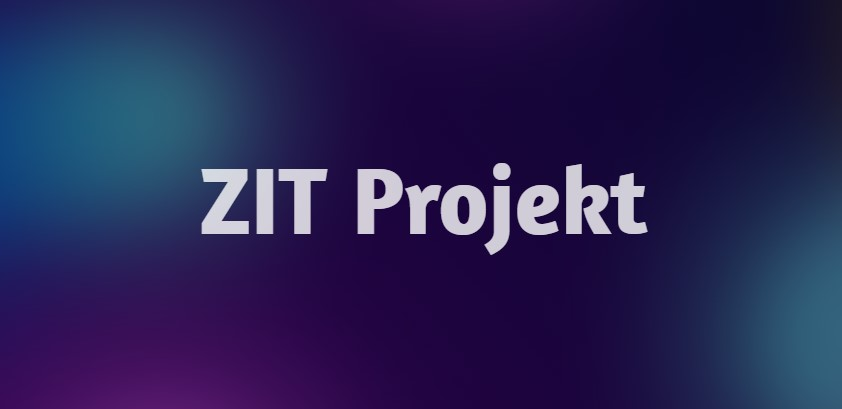

Základy informačních technologií
Zadání:
Webová prezentace nebo aplikace musí obsahovat minimálně tři HTML stránky, z nichž jedna bude úvodní
stránkou, druhá osobním profilem či životopisem a třetí stránkou bude přehled projektů z 1.
semestru. Web má být vytvořen pomocí technologií HTML5 a CSS3, přičemž je možné využít i frameworky,
například Tailwind nebo Bootstrap. Součástí projektu musí být JavaScript (ES6) s alespoň jedním
interaktivním prvkem, jako je například přepínání tématu, validace formuláře, slider, mapa nebo
jednoduché volání API. Web musí mít responzivní design, aby byl funkční a dobře použitelný na
různých zařízeních. Finální verze webu musí být zveřejněna na serveru homel.vsb.cz pod vlastním
uživatelským účtem.
Mé poznámky:
Na projekt jsem si vyhradil celý páteční den, ale trochu jsem podcenil své plány, celý pátek mi totiž
trvalo jen vytvořit gradientní pozadí, chtěl jsem se naučit něco co jsem neuměl, tak se to trochu
protáhlo. Na projektu jsem pracoval celou sobotu a nyní dodělávám projekt a dopisuji obsah v neděli.
Projekt jsem nedělal nějak extra rychle, chtěl jsem si to i trochu užít. Gradientní pozadí je hlavní
prvek designu, přišlo mi fajn spojit to s designem glass efektu aby gradient různě celý web
prosvítal, je to na mě trochu moc barev, ale myslím, že colkově to vypadá dobře. Úvodní stránku jsem
se rozhodl věnovat shrnutí předmětů 1. semestru, využil jsem VŠB logo a tématickou barvu. Podobný
styl jsem využil na osobním profilu (životopisu), ale vytvořil jsem novou strukturu pro grid.
Stránku projekty jsem trochu obměnil aby vše nebylo na stejné brdo, ale dělal jsem to stylem blogu a
vytvořil jsem interaktivní prvek tabs, aby projekt měl navíc k interaktivnímu pozadí další
interaktivní prvek. V projektu jsem frameworky nepoužil, Tailwind ovládám a bylo by to možná i
vhodnější ale chtěl jsem si procvičit klasické CSS. Media queries jsou použity pro resposivní
design. Dopíšu obsahy těchto "blogů" a budu nahrávat na web.
